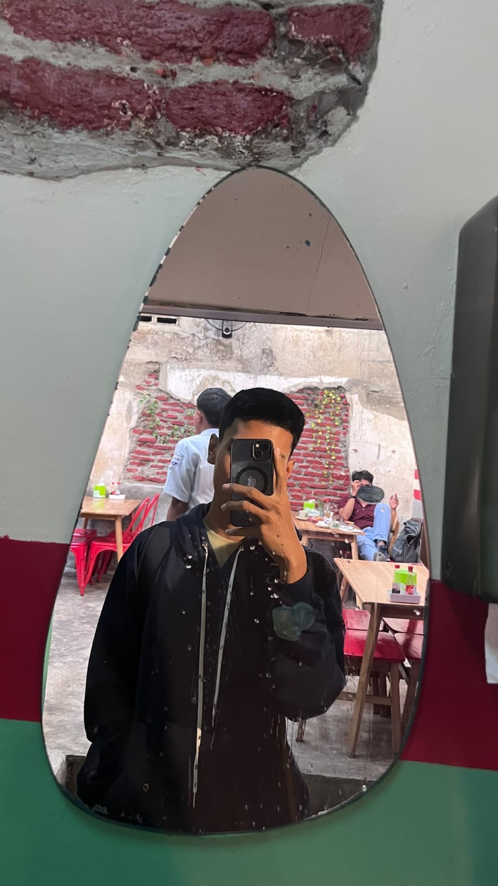

Halo, saya Ilham.
Siswa kelas X SMK, calon Junior Web Developer di Kelas Industri UBIG.
Tentang Saya
Saya tinggal di Pasuruan dan senang mencoba hal baru di dunia teknologi. Saya ingin membuat website yang bermanfaat untuk sekolah dan UMKM di sekitar rumah.
Hobi
- Bermain bola
- Bermain voli
- Mendengarkan musik
Cita-cita
Menjadi Full Stack Web Developer. Langkah yang saya rencanakan:
- Menuntaskan Kelas Industri UBIG sampai Semester 4
- Magang di perusahaan teknologi
- Bekerja sebagai Web Developer
Keahlian
- HTML dasar (sedang dipelajari)
- Mengetik cepat
- Desain poster dengan Canva
Jadwal Belajar
| Hari | Waktu | Kegiatan |
|---|---|---|
| Rabu | 19.30 - 20.30 | Merekam video dan menulis laporan |
| Jumat | 19.00 - 20.00 | Membaca ulang modul |
| Sabtu | 19.00 - 21.00 | Mengerjakan tugas praktik |